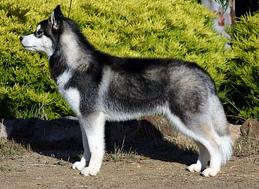

El husky siberiano es una raza de perro de trabajo originaria del norte de Siberia (Chukotka, Rusia).Para comprar un Husky Siberiano bebé con papeles de raza (en un criadero o veterinaria) habrá que pensar entre $75.000 y $120.000 en función del pedigrí y el prestigio del criadero.
El pueblo Chukchi se distingue en dos tipos, los nómadas y los sedentarios. El Husky Siberiano vio la luz entre estos últimos, generalmente asentados a las costas del mar de Bering, en el Ártico.
Es un perro de tamaño mediano y peso ligero, a pesar de lo que su apariencia pueda suscitar, casi toda la envergadura de un Husky Siberiano es, de hecho, puramente pelo. Creado para sobrevivir en temperaturas por debajo del punto de congelación, el Husky Siberiano posee un pelaje denso y grueso bien pegado al cuerpo, nunca largo (esta característica conocida como Wooly Husky es una mutación genética negativa).